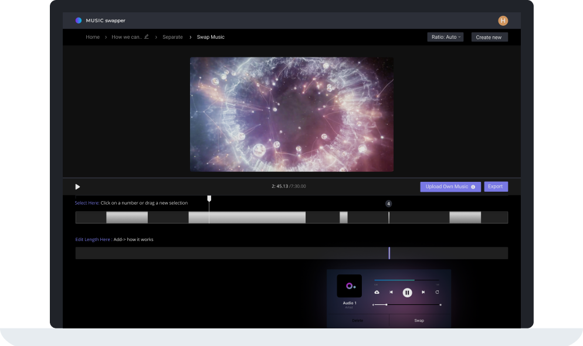

2020.11.11 - 2021.01.22
Cochl Internship : SoundRecognition AI , GraphQL and Data Visualization

My Overall Internship Experience
Cochl. is a machine learning sound recognition AI company that specializes non-verbal sound recognition. I chose to work here because my main interests lied in studying interactive experiences with machine learning.
One of Cochl.’s main products was Cochl. Sense, an AI technology that recognized non-verbal sounds around our environment such as coughs, window breaking, machine errors ..etc. to prevent danger situations, analyze the health conditions of people , and prevent machine accidents in advance. During my time here I was able to see how machine learning technology was used in today's industry, how much in demand they were at the moment, and usage ethics that were being overlooked by the industry.
Our company was a B2B company, selling our products to other companies that were interested in using our products. We worked with a wide range of companies ranging from, Music Companies(SKT Flow), Mercedes Benz, Furniture Companies, Philips Home ... etc. While I mostly worked on software engineering, finessing our products and enhancing the software, I was able to see that many industries were interested in including machine learning technology in their products to make them more 'smart'. Here are a few bullet points of the main things I learned during my time at Cochl.
Some of the areas in where companies wanted to implement machine learning technology was quite concerning to such as a 'bathroom sound recognition'. In many areas in today's machine learning industry technology was spreading at a rapid pace and legal measures that prohibited the infringment of rights of users were not being placed at a matching pace. I was also able to experience how machine learning products needed constant progress towards advancement in technology. We needed to always check the performance of our products, see what areas they were performing well and what needed improvement. This brought me to thinking that data visualization software for machine learning researchers to check the performance of their models was also an in demand need.
Work
1. Cochl Data Visualization
I came to Cochl looking for an opportunity to incorporate machine learning in data visualization. I decided to make a data visualization component for Cochl.'s website to explain to our users of how the process for Cochl's AI works and how the sound classification preforms. So for Cochl's website, I created a 3D canvas component that recognizes sounds and a 3D visualization that explaines the classification process of our machine learning service. I created this 3D visualization element by adding a canvas section to the website. Though this visualization is not in production yet due to heavy weight issues, it was an unique experince for me to work with real data and create visualizations on it.
2. Cochl Newsroom
I worked on Creating the Newsroom for Cochl.'s main website. Cochl's main website was made using React and Gatsby. Gatsby uses React-Router for its linking system. However, when going through multiple links, (clicking a link to load page and clicking a link again from there to load the same page with different data) would throw an error. This was because the props passed through the location data using react-router can only be used once. So to load data, the optimal way to do this is to use Gatsby with GraphQL. I used GraphQL with gastby to grab the data from markdown files and then style the news article accoding to the design. from the newsroom pages and add data to the page templates. With this, the news articles were rendered. I worked with GrapQL, to query the data we wanted. I also used React metascraper to scrape data for the Press articles of Cochl.
3. Mercedes Benz
During my Internship as a Software Enginner at Cochl, (a Machine Learning Company
specializing in non-verbal Sound Recognition AI )
I created the car cockpit display
of Cochl's Sound Recognition AI integrated in
Mercedes Benz car cockpit display.
With the uprise of smart cars and more interactive technology,
Benz Daimler was interested in creating a more Emotionally Aware Car. This is why Daimler signed
a contract with Cochl to create a smart car that can recognize the state of its users through
non-verbal sounds.
Cochl's Sound AI technology can recognize non-verbal sounds such as sighs, coughs, sirens, and
machine malfunctions to recognize non-verbal, more emotionally aware human and environmental states.
Among these features, the ones in the graph below are the ones we were planning to add to Mercedes Benz.
Implementing Sound Recognition AI into Mercedes Benz. You can read more about it here.
4. Music Swapper
Using Cochl. Sense’s product, one B2C product I worked on was ‘Music Swapper’. Music Swapper is an application that recognizes music within a video with copyright infringement and swaps that music with other copyright free suggestions . I worked with UX Designers to Create the application from scratch. I used Material UI, organized the design system, constantly cleaned the code to optimize it. The code for this website is unavailabble for it is the company's property. If you are a potential employer and would like to take a look at this, please contact me This is what the final result screens look like. The website is not in production yet so it is currently unvailable.